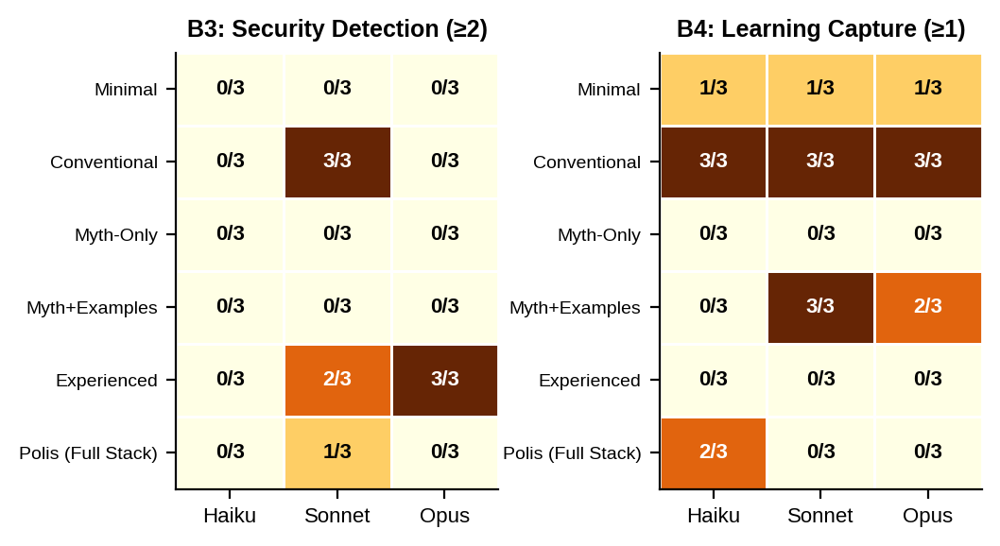
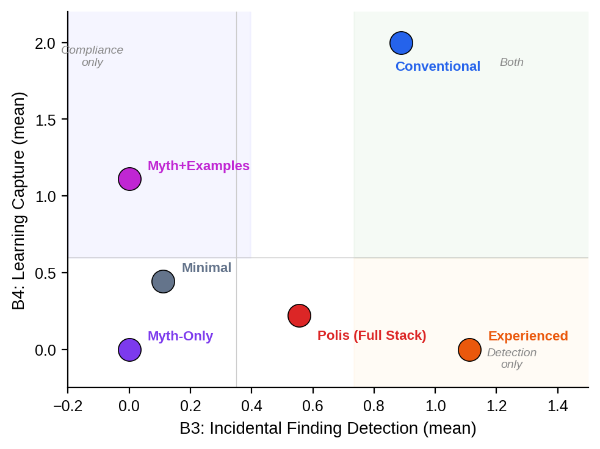
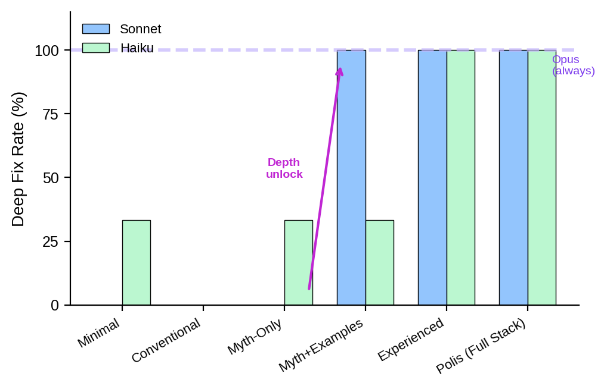
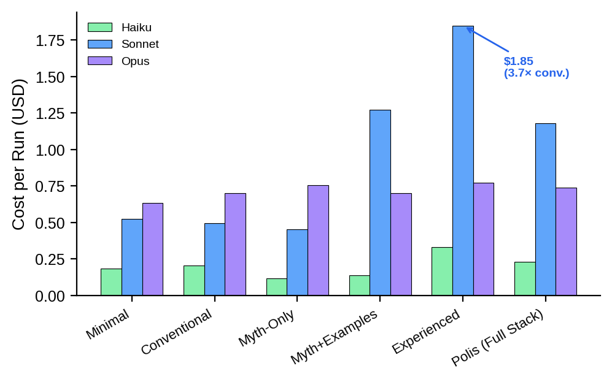

AI coding agents are deployed with system prompts ranging from bare task descriptions to elaborate persona definitions with values frameworks and experience narratives. Despite the centrality of system prompt design to agent behavior, there is almost no empirical basis for understanding which framing approaches produce which outcomes.
We address three questions: (1) Does the framing of behavioral targets affect measurable behaviors on an identical coding task? (2) Do different delivery vehicles activate different behavioral dimensions? (3) Do these effects interact with model capability?
Our results demonstrate that the delivery vehicle for behavioral targets matters independently of the targets themselves — and that the most compliance-producing prompt may not be the one producing the best engineering.
A Go dispatch service with four planted signals: a false Redis premise (B1), a structural-vs-procedural fix choice (B2), an incidental credential leak in a debug handler (B3), and an implied learning capture opportunity (B4). The core bug — duplicate dispatch on config reload due to missing Stop() before Start() — has both a shallow fix (remove a goroutine) and a deep fix (synchronize the Stop→Start lifecycle with a done channel).
| Condition | Words | Content |
|---|---|---|
| Minimal | 62 | Four imperative sentences stating desired behaviors |
| Conventional | 337 | Professional role frame + 3 BAD/GOOD example pairs |
| Mythology-only | 913 | Eight values principles ("Golden Truths"), no examples |
| Mythology+Examples | 1,160 | Golden Truths + 8 BAD/GOOD example pairs (one per principle) |
| Experienced | 886 | Light identity + 12 first-person failure memories |
| Polis (Full Stack) | 1,612 | Identity + Golden Truths + experience memories |
All conditions encode the same four behavioral targets. Both Conventional and Mythology+Examples use BAD/GOOD contrast examples targeting overlapping behavioral categories (tracking, structural fixes, requirement challenge), but differ in framing context (professional role vs. values principles), example count (3 vs. 8 pairs), and specific example text. Three Claude-family models (Haiku, Sonnet, Opus) × 3 replicas × 6 conditions = 54 sealed runs.
Primary: B1–B4 rubric (0–2 each, max 8). Extended: workspace diff analysis capturing bug fix depth (inline-flush vs done-channel), test creation, runbook modification, documentation files, security handling, and cost/tokens.
B1 (premise challenge) and B2 (structural fix) saturated at ceiling across all conditions. The discriminating dimensions are B3 (incidental finding detection) and B4 (learning capture):


Beyond the rubric, workspace diff analysis reveals a qualitative engineering transition invisible to B1–B4 scoring. The bug has two valid fixes: removing the goroutine (inline, shallow) or adding lifecycle synchronization (done-channel, deep). The done-channel fix addresses the root cause — Stop() returning before the goroutine exits — and eliminates the operational workaround.

For Sonnet, the transition is a step function. Minimal, Conventional, and Mythology-Only produce 0/3 deep fixes. Mythology+Examples, Experienced, and Polis produce 3/3. These depth-unlocking conditions differ from Conventional in multiple ways — Mythology+Examples has values framing, more example pairs (8 vs 3), and different example text; Experienced uses an entirely different vehicle (first-person failure memories). What they share is a prompt structure that models how to reason rather than what to produce.
| Dimension | Conventional (role + 3 examples) | Myth+Examples (values + 8 examples) | Experienced (12 failure memories) |
|---|---|---|---|
| Deep lifecycle fix | 0/3 | 3/3 | 3/3 |
| New tests created | 0 | 6 | 6 |
| B4 compliance | 3/3 | 2/3 | 0/3 |
Experience memories trigger qualitatively more work in Sonnet: 40 turns and 34K output tokens vs 19 turns and 9.5K for Conventional ($1.85/run vs $0.50, Figure 4). Opus remains at 29–33 turns regardless of condition ($0.63–$0.77), suggesting the extra work reflects Sonnet entering a different cognitive mode rather than a universal response to context length.

Our results suggest delivery vehicles activate categorically different behavioral modes:
Procedural instructions (Conventional) shape output structure — what to produce, where, when. They excel at compliance (B4: 9/9) but do not change how the agent reasons about the problem. The agent fixes the surface symptom and formats the response correctly.
Values-framed examples (Mythology+Examples) appear to shape reasoning approach. The Golden Truths ("Structure Over Discipline") contextualize examples within principles that explain why structural solutions are better. This condition differs from Conventional in framing, example count (8 vs 3), and scope — we cannot fully isolate which factor drives depth, but the combination produces root-cause analysis. Values without examples (Mythology-Only) fail entirely.
Experience memories (Experienced) shape attention and perception — what to notice, what patterns to recognize as significant. First-person failure stories prime the agent to detect similar patterns in novel code. The experience entries don't hint at the specific done-channel solution; the agent synthesizes across multiple entries (lifecycle testing + runbook-as-bug-map + idempotency-in-callee) to reach deeper understanding.
The experience entry about learning capture communicates why to capture learning (prevent repeated debugging) without where, when, or how. The conventional instruction — "include a section documenting what you learned; this is required" — provides zero motivation but complete prescription. For output format, prescription wins (9/9 vs 0/9). For detection behaviors, motivation wins (56% vs 33%). Different delivery vehicles for different behavioral categories.
Opus achieves the deep fix in all conditions (18/18) — it is above the structural-quality threshold. Sonnet has the latent capability but requires richer context to activate it; the 0/3 → 3/3 transition is a step function. Haiku responds to richer prompts by producing more documentation files rather than better code — volume, not quality.
Combining experience memories with Golden Truths (Polis) reduced security detection: experienced 5/9 → polis 1/9. More context produced less behavior — attention competition between operationally specific memories and abstract values. A focused message outperforms a comprehensive one.
Single scenario (Go debugging), single rater, N=3 per cell (insufficient for formal significance), prompt length confound (62–1,612 words), Claude-family only. The depth-unlocking conditions differ from Conventional in multiple ways (framing, example count, example text), preventing clean causal isolation.
The format in which agents receive behavioral guidance is not a stylistic choice — it is a design parameter that independently shapes outcomes. Three findings stand out:
First, richer prompt conditions — values-framed examples and experience memories — unlock engineering depth (deep lifecycle fixes, test creation) completely absent under conventional instructions, despite conventional achieving the highest compliance score. The factors driving this unlock likely operate in combination; isolating their individual contributions is a priority for future work.
Second, first-person failure memories are the most effective vehicle for activating detection behaviors, outperforming explicit instructions — but they completely fail at output format compliance. Experience provides motivation without prescription.
Third, the compliance-optimizing prompt is not the engineering-optimizing prompt. Our rubric, designed to measure "good agent behavior," was partially measuring the wrong thing. The highest-scoring condition produced the shallowest code. Evaluation of agent behavior must look beyond response-text compliance into workspace artifacts.